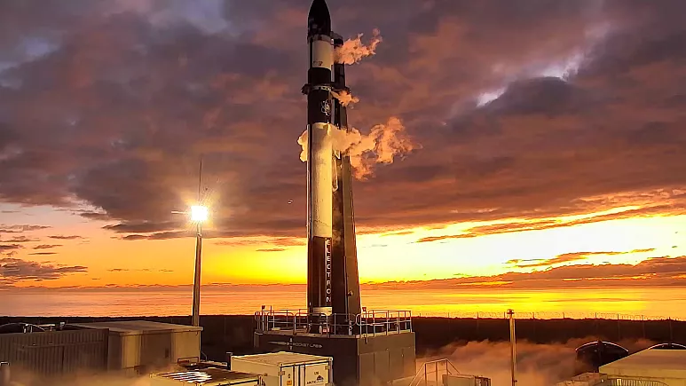

yeni uydu
-

nasanın yeni uydusu
NASA'nın yeni uydusu, Dünya’nın yörüngesinden çıkarak Ay yolculuğuna başladı Amerikan Havacılık ve Uzay Dairesinin (NASA) Ay'ı inceleyecek yeni uydusu, Dünya’nın yörüngesinden çıkarak, 4 aylık Ay yolculuğuna başladı. NASA'nın internet sitesine göre, Rocket Lab Photon uydu platformunun taşıdığı, mikrodalga fırın büyüklüğündeki uzay aracı CAPSTONE, Dünya alçak yörüngesini aştı.Yaklaşık 25 kilogram olduğu belirtilen CAPSTONE, Ay'a yolculuğuna başlarken geri kalan mesafeyi uydunun kendi itiş gücü ve Güneş'in çekim gücüyle alacak. “CubeSat” kategorisindeki uydunun, toplayacağı verileri NASA'ya göndererek insanlığın yeniden Ay'a inişi için gerekli ön bilgileri sağlaması bekleniyor.
-
öne çıkanlar
 6, 2023
6, 2023
-
yakın zamanda olanlar
-

yabancı yasam
3, 2023 -

GALAXY
1, 2023
-